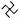

Onu son gördüğümde rengi kırmızıydı. Gökyüzü çorba gibi kaynayıp köpürüyordu. Bazı yerleri yanmıştı. Siyah kırıntılar, kırmızılıklar arasında biber rengi noktalar vardı.
Daha önce çocuklar yağ lekeli sayfalar gibi görünen o sokakta seksek oynuyordu. Ben geldiğimde seslerini hâlâ duyabiliyordum. Ayaklar yola vuruyordu. Çocuklar gülüyordu, gülümsemeleri tuz gibiydi ama çabucak siliniyordu.
Ve bombalar.
Bu kez her şey için çok geçti.
Sirenler. Radyodaki alarm sesleri. Hepsi çok gecikmişti.
Dakikalar içinde, beton ve toprak yığınları oluştu. Sokaklar delinmiş damarlara döndü. Akan kanlar yolda kurumuştu ve cesetler selle sürüklenen kütükler, çalı çırpılar gibi oraya sıkışmıştı.
Her biri yere yapışmıştı. Bir ruhlar paketi.
Bu yazgı mıydı?
Talihsizlik miydi?
Onları öyle yere yapıştıran şey bu muydu?
Elbette hayır.
Aptallık etmeyelim.
Muhtemelen bulutların arasına gizlenmiş insanların attığı bombalarla daha çok ilgisi vardı.
Saatler boyunca gökyüzü yıkıcı bir kızıllıkla kaplandı. Küçük Alman kasabası bir kez daha yıkılmıştı. Kül parçalan öyle güzellikle yağıyordu ki uzanıp dilinizle yakalamak ve tadına bakmak istiyordunuz. Ancak, böyle bir şey yaparsanız dudaklarınız yanar, ağzınız pişerdi.
Açıkça görüyordum.
Tam gitmek üzereyken onu orada diz çökmüş halde buldum.
Etrafında molozlardan bir dağ yazılmış, tasarlanmış, dikilmişti. Elinde bir kitabı sımsıkı tutuyordu.
Diğer her şey bir yana, kitap hırsızı bodruma geri dönmek, hikâyesini son bir kez yazmak veya okumak istiyordu. Bunu yüzünde açıkça görebiliyordum. Bunun için ölüyordu -evin güvenliği için- ama kıpırdayamıyordu. Zaten bodrum da artık yoktu. Paramparça olup dağılmış arazinin bir parçası olmuştu.
Lütfen, sizden bir kez daha bana inanmanızı istiyorum.
Durmak ve yere çömelmek istedim.
“Çok üzgünüm, çocuğum, ” demek istedim.
Ama buna izin yoktu.
Çömelmedim. Konuşmadım.
Bunun yerine bir süre onu izledim. Nihayet hareket edebildiğinde peşine takıldım.
Kitabı düşürdü.
Diz çöktü.
Kitap hırsızı acıyla uludu.
Temizlik başladığında kitabın üzerine defalarca basıldı ve sadece beton yığınlarının temizlenmesi için emir verilmiş olmasına rağmen, kızın en değerli eşyası bir çöp arabasına atıldı. Kendimi tutamayarak kamyona binip onu elime aldığımda, onun hikâyesini yolculuklarım sırasında yıllar boyunca ve yüzlerce kez okuyacağımı anlamamıştım. Yollarımızın kesiştiği yerleri izleyecek, kızın gördüklerine ve nasıl olup da hayatta kaldığına hayret edecektim. Yapabileceğimin en iyisi buydu; o dönemde gördüğüm diğer her şeyle nasıl uyumlu olduğunu izlemek.
Onu hatırladığımda uzun bir renkler listesi görüyorum ama en çok üç tanesi göze çarpıyor. Bazen o üç anın üzerinde süzülüyorum. Kirli bir gerçek netliğe ulaşana kadar havada asılı duruyorum.
İşte o zaman formülleştiklerini görüyorum.
RENKLER
KIRMIZI: BEYAZ: SİYAH:
Birbirlerinin üzerine düşüyorlar. Karalanmış siyah imza kör edici beyaz dairenin, o da koyu kıvamlı kırmızının üzerine düşüyor.
Evet, sık sık onu hatırlıyorum ve sayısız ceplerimden birinde tekrar tekrar anlatmak için onun hikâyesini saklıyorum. Her biri kendi başına sıra dışı olan parçalardan oluşmuş küçük ordunun bir üyesi. Her biri bana sizin, insan deneyiminizin değerli olduğunu kanıtlayan bir girişim; muazzam büyüklükte bir girişim sıçrayışı.
İşte bu. Bir avuçtan biri.
Kitap Hırsızı.
İsterseniz benimle gelin. Size bir hikâye anlatayım. Size bir şey göstereyim.